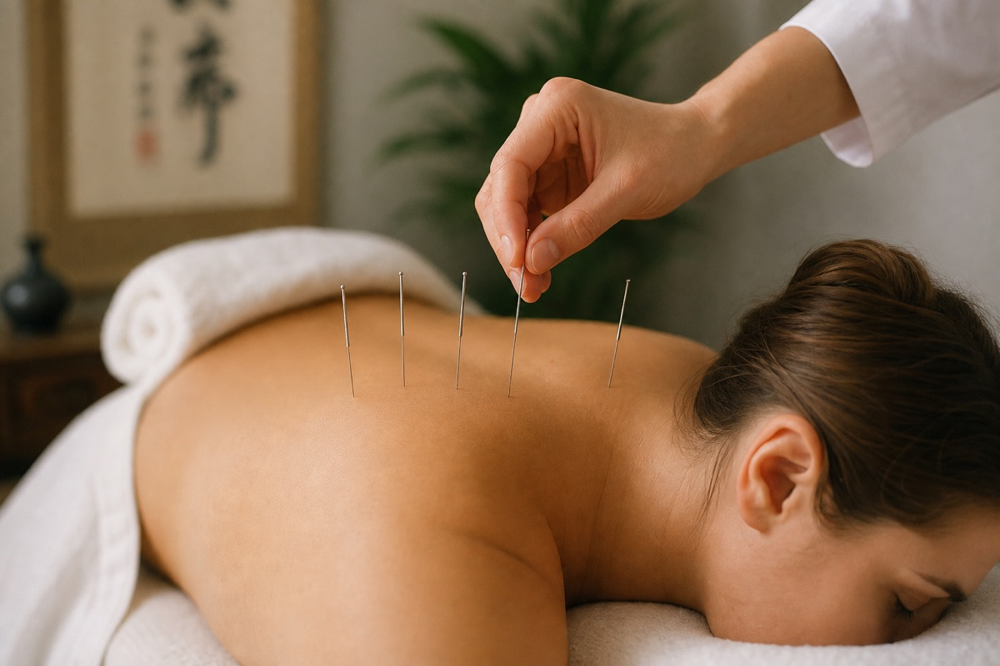
Acupuncture classique
Traitement par insertion d’aiguilles sur les points et méridiens pour soulager douleurs chroniques, tensions musculaires, stress, insomnie et troubles digestifs, tout en favorisant l’équilibre énergétique global.
Brossard · Rive-Sud · Depuis 2019
Soins personnalisés en médecine traditionnelle chinoise et techniques manuelles, dans un cadre professionnel pensé pour votre bien-être.
Acupuncture, massothérapie et thérapies complémentaires de la MTC, dispensées avec rigueur et bienveillance.

Traitement par insertion d’aiguilles sur les points et méridiens pour soulager douleurs chroniques, tensions musculaires, stress, insomnie et troubles digestifs, tout en favorisant l’équilibre énergétique global.
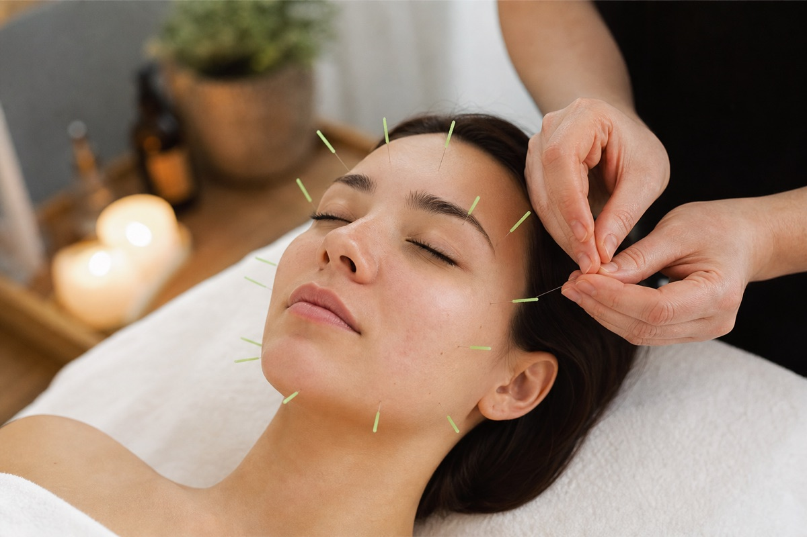
Soins du visage par acupuncture qui peuvent contribuer à atténuer les rides, uniformiser le teint et raviver l’éclat naturel de la peau, sans chirurgie ni produits invasifs. Les résultats varient selon chaque personne.
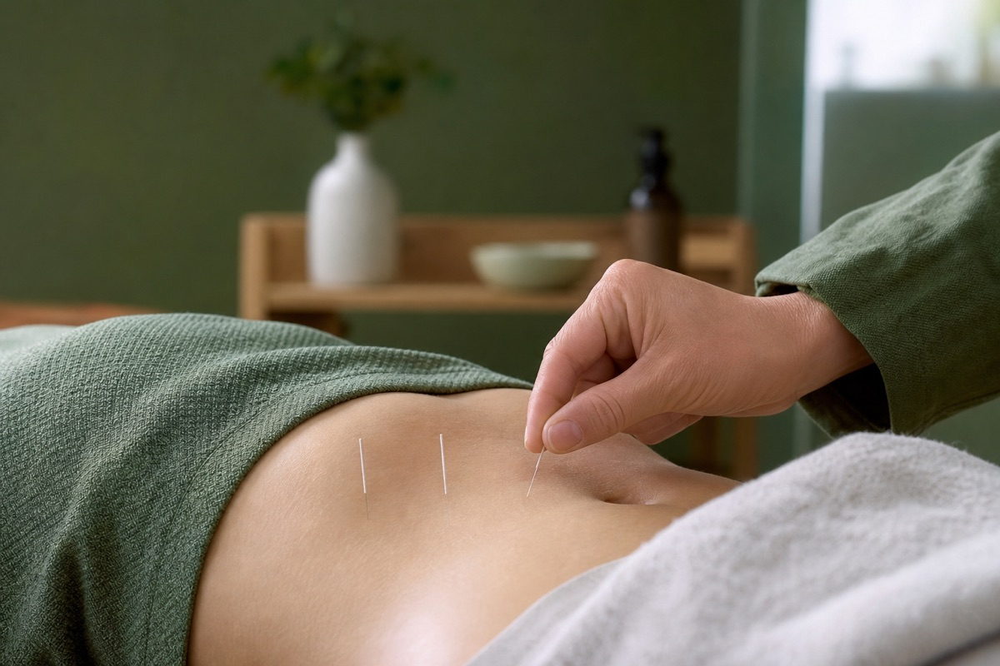
Accompagnement par acupuncture des mécanismes liés à l’appétit, la digestion et le métabolisme, dans une démarche globale de rééquilibrage et de saines habitudes de vie.
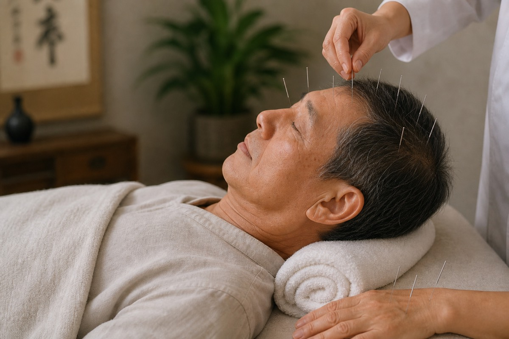
Accompagnement complémentaire de la rééducation après un accident vasculaire cérébral (AVC, « 中风 ») : stimulation de points ciblés pour soutenir la mobilité, le tonus musculaire et la motricité des membres, en complément du suivi médical. Les résultats varient selon chaque personne.
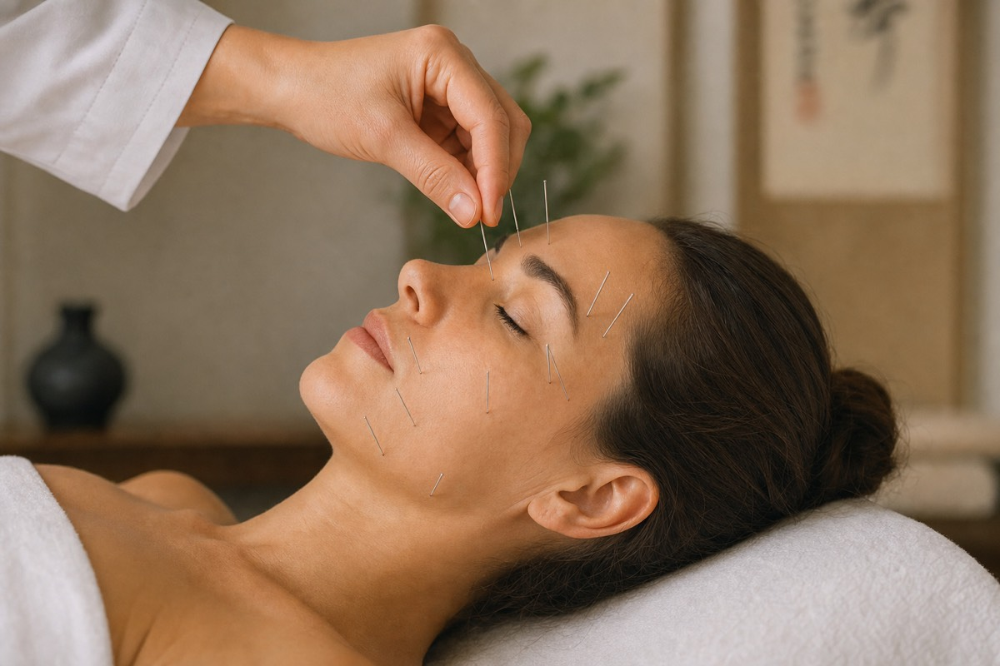
Soins ciblés en cas de paralysie faciale (type paralysie de Bell, « 面瘫 ») : aiguilles fines posées sur les points du visage pour soutenir la récupération de la mobilité, de la symétrie et du tonus des muscles faciaux, en complément du suivi médical. Les résultats varient selon chaque personne.
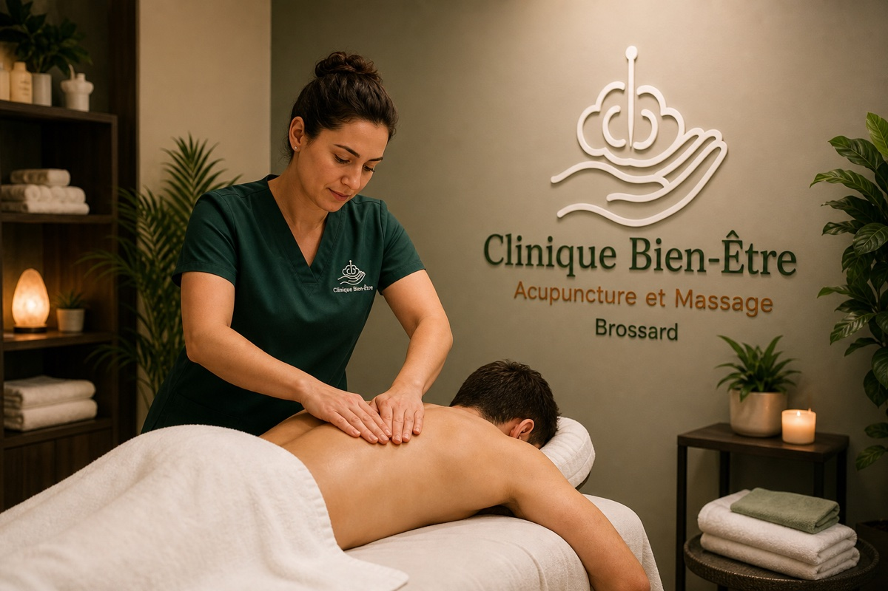
Pressions soutenues et travail en profondeur des muscles et des fascias pour dénouer les nœuds, soulager les raideurs persistantes et améliorer l’amplitude des mouvements.
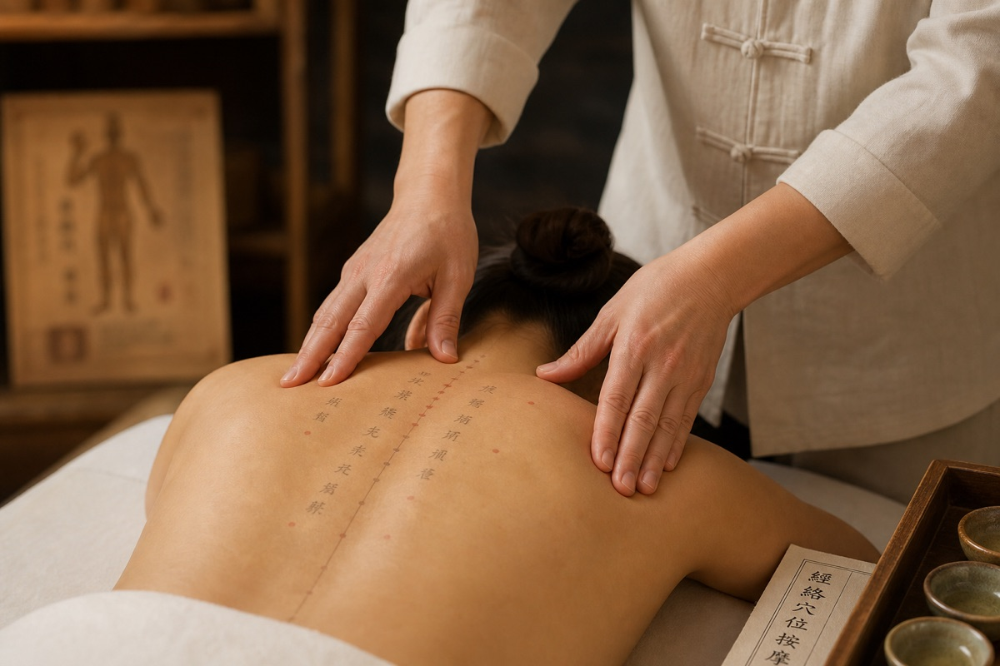
Pressions ciblées et travail le long des méridiens inspirés de la MTC pour harmoniser la circulation de l’énergie (Qi), relâcher les tensions et soutenir l’auto-régulation du corps.
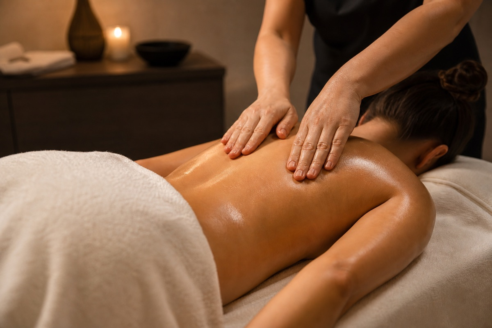
Gestes longs et fluides, pétrissages et tapotements pour détendre les muscles en surface et en profondeur, stimuler la circulation et soulager les tensions du quotidien.
Mouvements lents et enveloppants, pression douce à modérée pour relâcher le stress accumulé, retrouver un calme intérieur et favoriser un sommeil réparateur.
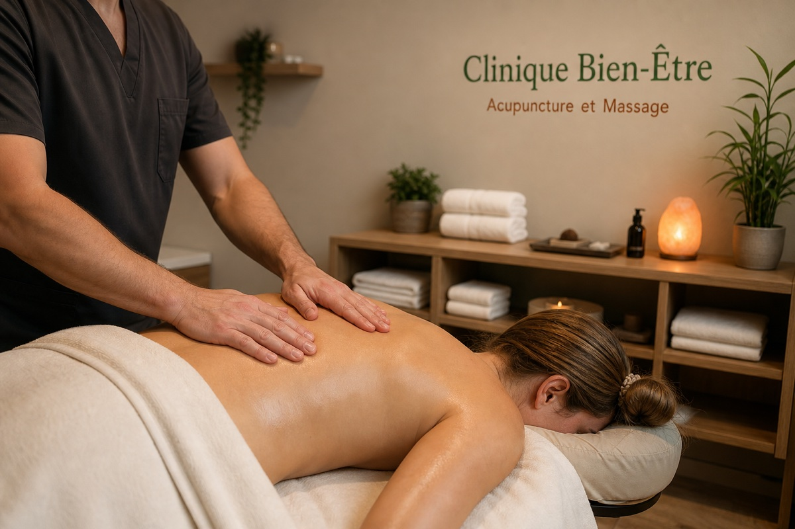
Manœuvres douces, lentes et rythmées pour soutenir la circulation lymphatique, soulager la sensation de jambes lourdes ou de rétention d’eau, favoriser l’élimination des déchets métaboliques et accompagner une détente profonde du corps.
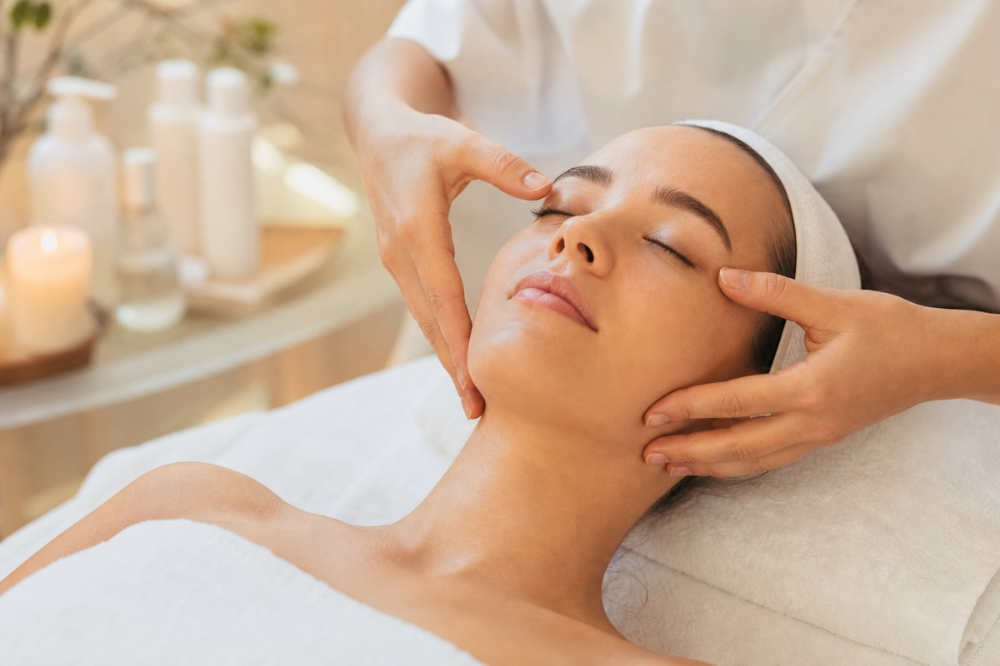
Manœuvres délicates sur le visage, le cou et le cuir chevelu pour détendre les traits, drainer les tensions et illuminer le teint.
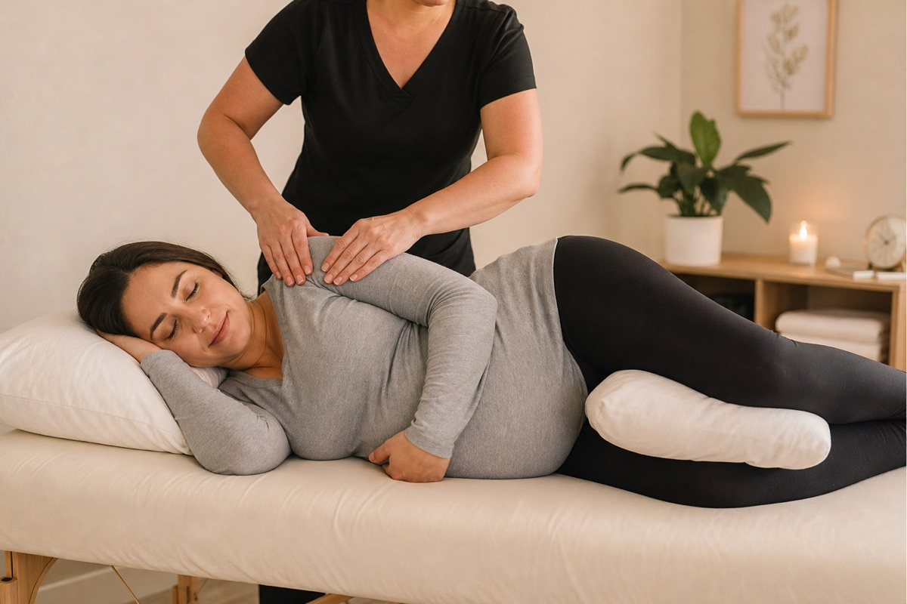
Techniques adaptées et sécuritaires selon le stade de la grossesse pour soulager tensions lombaires, jambes lourdes et inconforts, dans une atmosphère calme et respectueuse.
Approche douce et ludique selon l’âge de l’enfant pour apaiser le système nerveux, favoriser le repos et soutenir le bien-être au quotidien, avec l’accompagnement du parent.
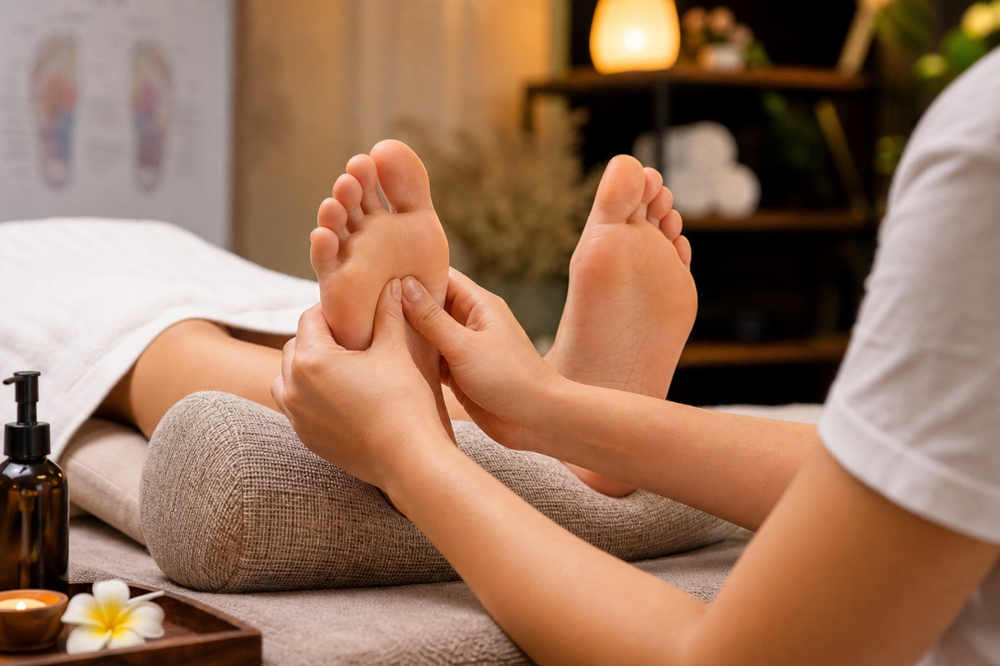
Stimulation des zones réflexes des pieds par pressions précises pour induire une détente profonde, soutenir l’homéostasie et favoriser un sentiment d’équilibre général.

Techniques complémentaires de la médecine traditionnelle chinoise pour renforcer et prolonger les effets de vos soins.
Recommandation de médicaments de patente en poudre ou granules concentrés (flacons de dispensaires professionnels), choisis selon votre bilan en médecine traditionnelle chinoise et votre constitution, dans le cadre d’un suivi personnalisé.
Vous avez été victime d’un accident de la route ou du travail ? Nous accueillons les personnes référées par la SAAQ et la CNESST pour les traitements d’acupuncture autorisés dans le cadre de votre dossier.
Société de l’assurance automobile du Québec. Lorsque votre dossier est ouvert et les soins autorisés, nous offrons les traitements d’acupuncture dans le cadre de votre réadaptation.
Commission des normes, de l’équité, de la santé et de la sécurité du travail. Nous accompagnons les travailleuses et travailleurs référés pour des soins autorisés à leur dossier.
Apportez votre numéro de dossier et l’autorisation de soins ; des reçus officiels vous sont remis. Une question sur votre admissibilité ? Contactez-nous.
Demander un rendez-vous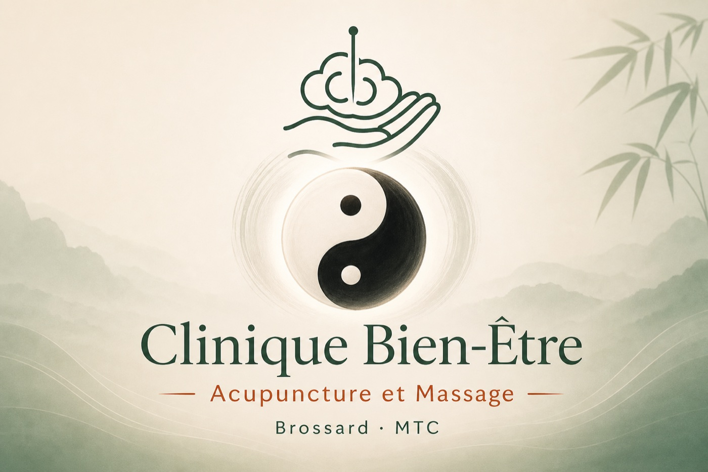
Fondée par Caixia Yun, acupunctrice membre de l’Ordre des acupuncteurs du Québec (OAQ), la Clinique Bien-Être offre des soins d’acupuncture à Brossard, sur la Rive-Sud du Grand Montréal, fondés sur la médecine traditionnelle chinoise (MTC) et une approche moderne du bien-être global.
Avec plus de 15 ans d’expérience clinique, Caixia Yun accompagne chaque patient avec une approche personnalisée visant à favoriser l’équilibre du corps et de l’esprit.
À la Clinique Bien-Être, nous proposons des séances d’acupuncture personnalisées pour soutenir votre bien-être général et aider à soulager divers inconforts physiques et émotionnels.
Nos soins d’acupuncture peuvent accompagner, selon votre situation et le jugement clinique :
Les soins d’acupuncture et de massothérapie sont complémentaires à la médecine conventionnelle et ne remplacent pas l’avis ou le traitement d’un médecin. Les résultats varient selon chaque personne. Caixia Yun est acupunctrice membre de l’Ordre des acupuncteurs du Québec (OAQ). Vous pouvez vérifier son droit d’exercice sur le site de l’OAQ.
L’acupuncture est une approche issue de la médecine traditionnelle chinoise visant à favoriser la circulation de l’énergie (Qi) et à soutenir les mécanismes naturels d’autorégulation du corps.
Elle s’inscrit dans une démarche de bien-être global, complémentaire à la médecine conventionnelle.
Notre mission est de vous accompagner vers un mieux-être durable grâce à des soins d’acupuncture adaptés à chaque personne.
Nous privilégions une approche préventive, personnalisée et respectueuse du rythme naturel du corps.
Soumettez votre demande en quelques étapes. Notre équipe vous contactera sous 24 h pour confirmer votre rendez-vous.
Horaires, adresse et moyens de nous joindre — réponse habituelle sous 24 h.
Chargement du formulaire…
Réponses aux questions les plus courantes sur nos soins, la durée des séances et les remboursements.
Les aiguilles utilisées sont stériles, à usage unique et très fines. La sensation est le plus souvent une légère piqûre ou une pression localisée, parfois un engourdissement bref autour du point. La grande majorité des patients trouvent la séance relaxante et bien tolérée.
Pour une première visite incluant la consultation et l’acupuncture, prévoyez environ 90 minutes. Un suivi d’acupuncture classique dure habituellement 60 minutes.
Dans la mesure prévue par votre régime, l’acupuncture (facturée par une acupunctrice membre de l’OAQ), la massothérapie et plusieurs approches de thérapies naturelles peuvent être admissibles au remboursement selon votre assurance collective ou privée.
Apportez votre carte d’assurance lors de votre visite; notre équipe pourra vous orienter. Pour toute question, contactez-nous au (450) 486-6677.
Buvez suffisamment d’eau, évitez les efforts intenses dans les heures qui suivent et accordez-vous un moment de repos pour prolonger les bienfaits du soin. Une légère sensibilité musculaire peut survenir et disparaît habituellement en 24 à 48 heures.
En cas de douleur inhabituelle ou persistante, n’hésitez pas à nous contacter.
Oui. Nous accueillons les personnes référées par la SAAQ (Société de l’assurance automobile du Québec) et la CNESST (Commission des normes, de l’équité, de la santé et de la sécurité du travail) pour les traitements d’acupuncture autorisés dans le cadre de leur dossier.
Veuillez apporter votre numéro de dossier, votre référence ou votre autorisation de traitement.
Une autre question ? Écrivez-nous à info@bienetreclinique.ca ou appelez le (450) 486-6677.
Questions, rendez-vous ou informations — notre équipe vous répond avec plaisir.
3-8500 Taschereau Blvd, Brossard, QC, J4X 2T4
Horaires :
Mardi – Samedi : 10h – 20h
Dim & Lun : Fermé
Nous recherchons des professionnels passionnés pour rejoindre notre équipe de massothérapie et contribuer à la santé et au bien-être de nos clients.
Exigences : Formation en massothérapie, statut légal de travail, communication en français/anglais/mandarin, attitude professionnelle et bienveillante.
Expérience : Bienvenue aux débutants - formation et encadrement fournis.
Postuler maintenant